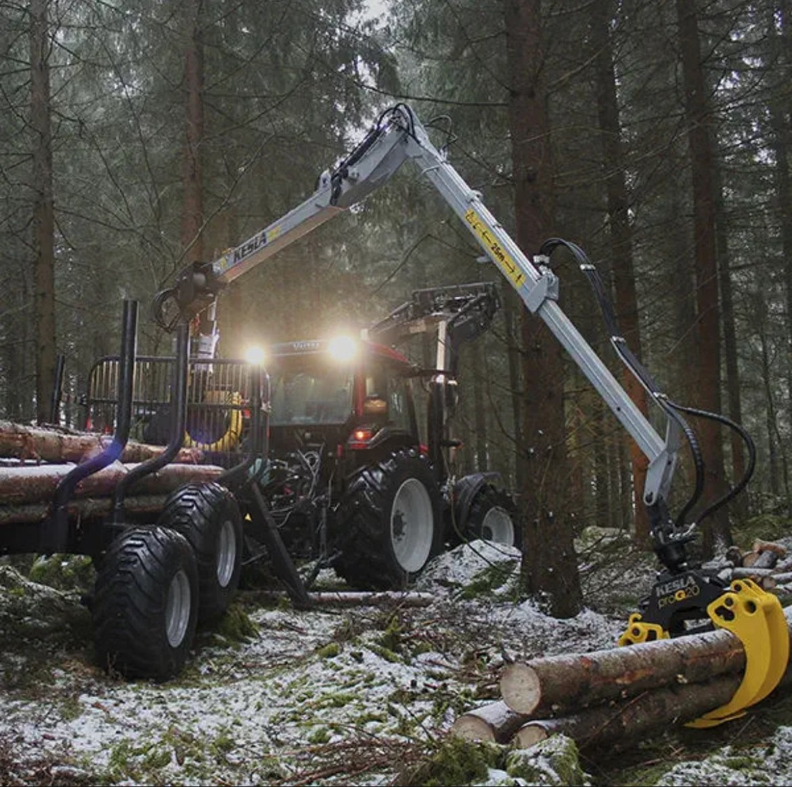
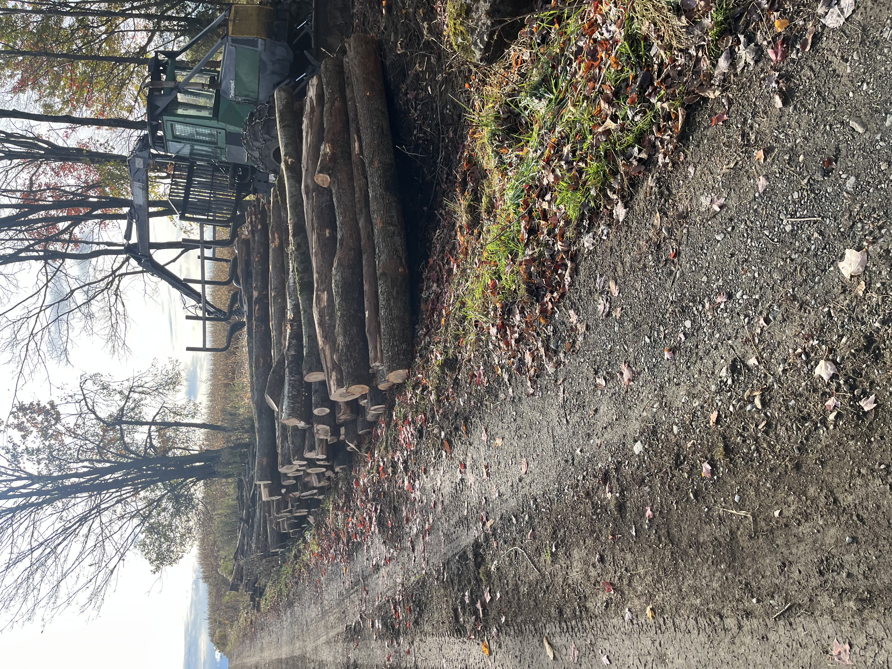
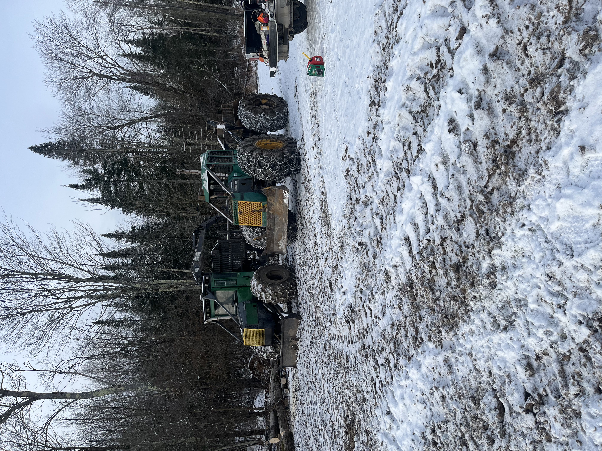

Nos Services
Expertise professionnelle en foresterie
← Retour à l'accueil

Service de Déboisement
Déboisement professionnel pour vos projets résidentiels et commerciaux. Nous utilisons des équipements de pointe pour assurer un travail rapide, sécuritaire et respectueux de l'environnement.
- Équipement spécialisé moderne
- Respect des normes environnementales
- Nettoyage complet du terrain
- Estimation gratuite

Coupe Sélective
Intervention forestière minutieuse qui permet de préserver la santé de votre boisé tout en optimisant sa valeur. Notre expertise assure une gestion durable de vos ressources forestières.
- Sélection stratégique des arbres
- Préservation de l'écosystème
- Amélioration de la qualité du boisé
- Planification sur mesure

Nettoyage d'Érablière
Service spécialisé pour l'entretien et l'optimisation de votre érablière. Nous maximisons la production d'eau d'érable en améliorant la santé et la croissance de vos érables.
- Expertise en acériculture
- Amélioration de la production
- Élimination des espèces concurrentes
- Valorisation du potentiel acéricole
Demandez une soumission
Contactez-nous dès aujourd'hui pour discuter de votre projet